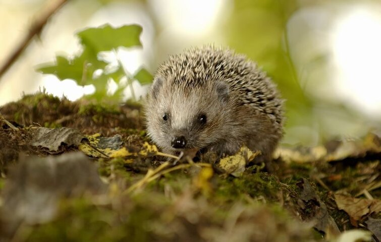
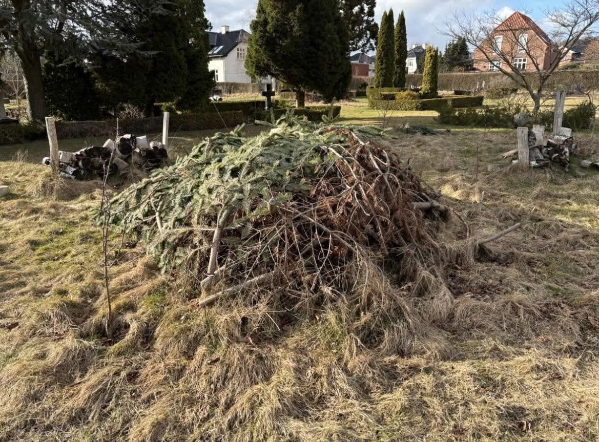
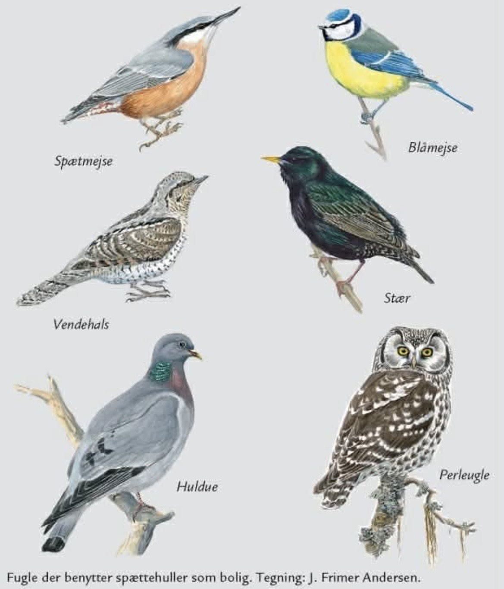
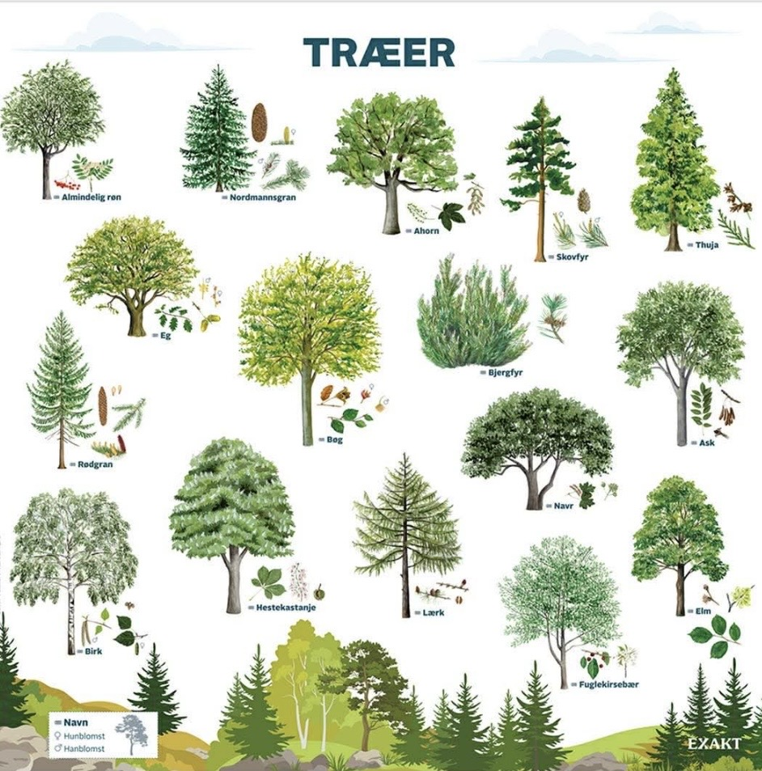
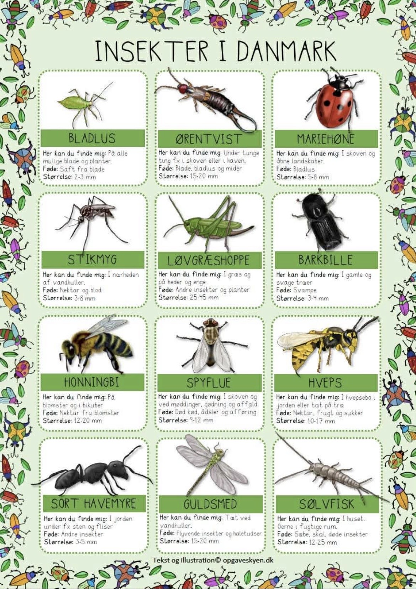
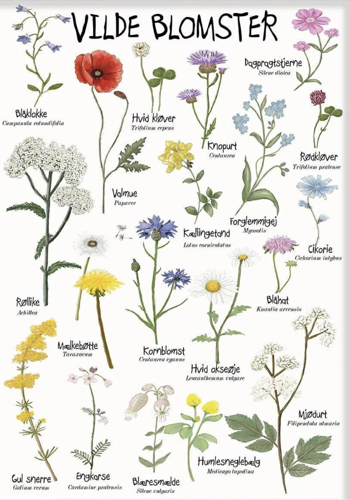
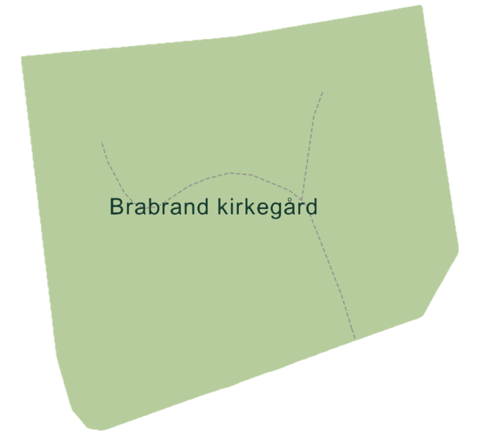

Dette er en fredfyldt kirkegård i Brabrand, hvor natur og ro går hånd i hånd.

På Nordre Kirkegård lever der forskellige dyr; man kan blandt andet møde et pindsvin.
Pindsvin bor i nogle af buskene her på Nord Kirkegården.


Der findes mange fugle på kirkegården, som synger og bygger reder.
Nogle fugle bygger deres reder i træerne på kirkegården.


Insekter som bier og sommerfugle hjælper med at bestøve planter.
Bier er meget vigtige for naturen, fordi de bestøver blomster.

Her kan du skrive om arrangementer.
Her kan du se et kort over Nord Kirkegården i Brabrand. Kortet gør det nemmere for besøgende at finde rundt mellem stier, gravsteder og forskellige områder.
Uanset om du er på besøg for at finde et bestemt sted, gå en tur eller blot udforske området, kan kortet hjælpe dig med at få et overblik og finde vej.
